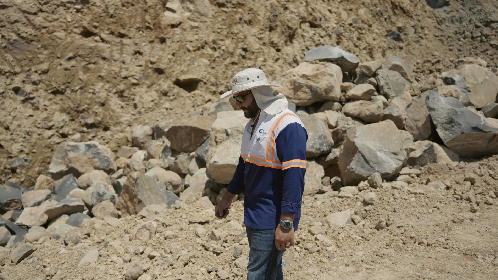
01
Extracción
La veta de roca basáltica se identifica en la parte alta del cerro y se extrae de forma controlada.
Cantera JOB · Ciudad Arce, El Salvador
Grava triturada de basalto con informe de laboratorio y precio claro. Del cerro de Ciudad Arce a tu obra, en cualquier punto del país.
01 — Red de despacho
20 rutas activas · 978 km de carretera · — camiones en ruta ahora
02 — La película
“Una decisión estratégica, fundamental, que representa los cimientos de nuestros desarrollos inmobiliarios y el progreso de nuestro país.”
03 — Nosotros
Cantera JOB es la planta de extracción y trituración de agregados de Grupo JOB — JOB Constructora y Acres Inmobiliaria. Producimos grava de basalto para concreto, gravilla, chispa, polvo de piedra y material selecto.
Abastecemos proyectos de infraestructura pública y privada y, como unidad estratégica, nuestros propios desarrollos inmobiliarios. Tenemos la materia prima, la maquinaria, los camiones y el punto de trituración: controlamos la calidad de principio a fin.
Grava que no se quiebra ni se deshace.
Tarifa pública por m³ y por viaje.
Báscula certificada y ticket digital.
Pedí antes de las 2 p.m., te llega mañana.
Desgaste Los Ángeles
Norma: máx. 50 %
Pérdida por intemperie
Norma: máx. 12 %
Piedra con caras fracturadas
Cúbica y angulosa
Mezclas diseñadas
por el laboratorio, hasta
04 — Proceso

La veta de roca basáltica se identifica en la parte alta del cerro y se extrae de forma controlada.
La excavadora alimenta la tolva y la quebradora de mandíbula rompe los bloques de basalto.
El cono reduce la piedra a la granulometría exacta: piedra cúbica, 100 % triturada.
Las cribas separan 3/4", 1/2" y 3/8". Cada producto tiene su acopio identificado y medido.
Cada viaje se pesa en báscula certificada y sale con ticket digital y ficha técnica.
Flota propia de camiones JOB rumbo a tu obra, de Ciudad Arce a todo El Salvador.
¿Listo para tu primer viaje?
Cotizar ahora05 — Productos
Todos salen del mismo basalto azul de Ciudad Arce. Elegí el producto, mirá su tamaño real y la tarifa pública por metro cúbico.
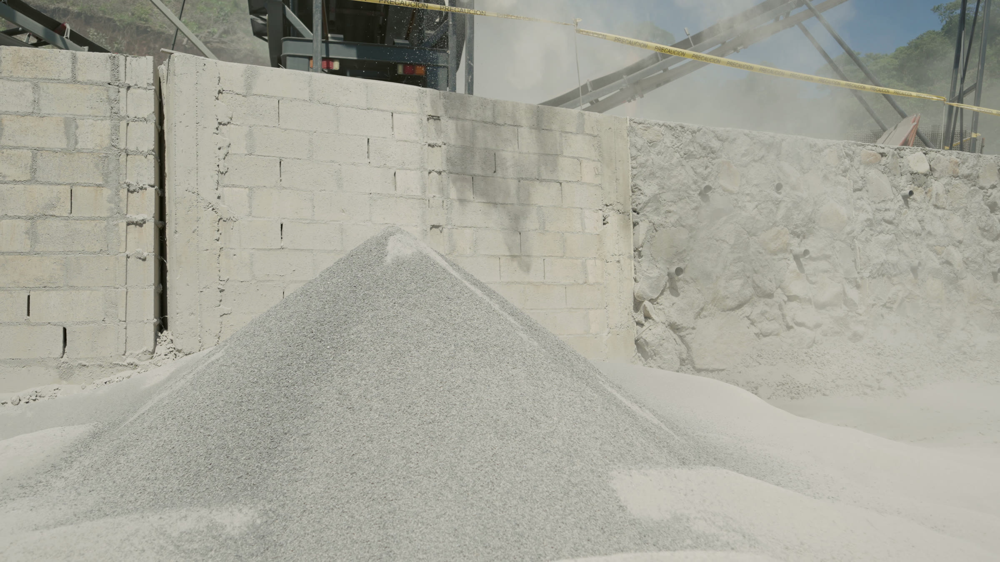
Escala aproximada junto a una moneda de 25 centavos.
Tarifa de lanzamiento propuesta, IVA incluido, precio en planta. Sujeta a confirmación.
06 — Calidad medida en laboratorio
Un laboratorio acreditado ante el OSA ensayó nuestra grava. Concluyó que produce “agregados de excelente calidad intrínseca” y que las gravas “son adecuadas para concreto de alta resistencia”.
El laboratorio diseñó mezclas con nuestras gravas en cuatro resistencias. Tocá una.
Piedra volcánica triturada · Ciudad Arce, La Libertad
07 — Logística
Tenemos la materia prima, la maquinaria, los camiones y el punto de trituración. Controlamos la cadena completa: sin quiebres de inventario y con el peso exacto en cada viaje.
08 — Voces de la cantera
La dirección de Grupo JOB explica, desde la planta, por qué esta cantera cambia la forma de construir.
09 — Así nació
Arrastrá para comparar el terreno al inicio del montaje con la planta en operación.
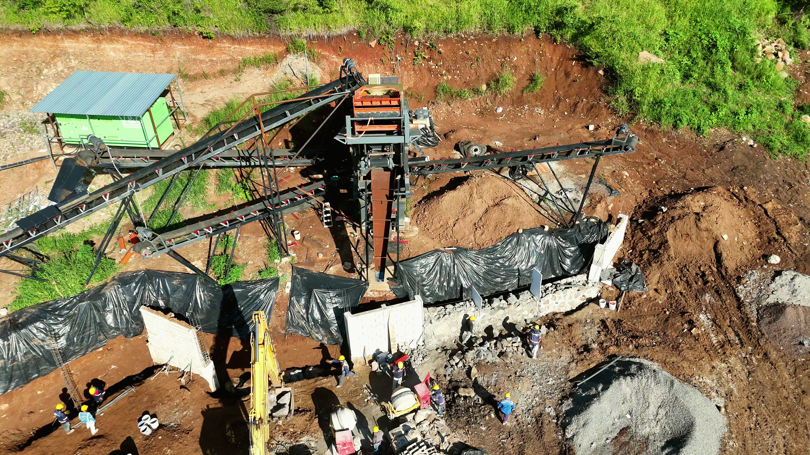
Levantamiento del terreno en El Cafetalito, cantón Santa Rosa.
Quebradora, cono, cribas y bandas transportadoras.
Prueba piloto. La grava 3/4" viaja a Condado Quetzal.
CONSULTA certifica 22 % de desgaste y conformidad ASTM C33.
Tarifa pública, ficha técnica y ventas a todo el país.
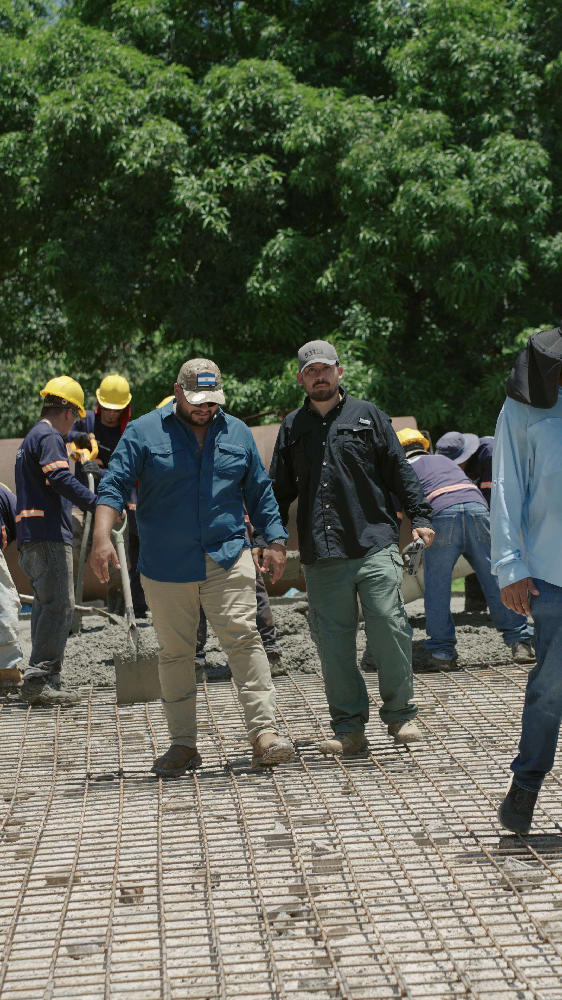
10 — De la cantera a tu casa
Condado Quetzal, el desarrollo de Acres Inmobiliaria en Quezaltepeque, es nuestro cliente ancla y la vitrina de calidad de cada metro cúbico que producimos.
11 — La cantera en imágenes
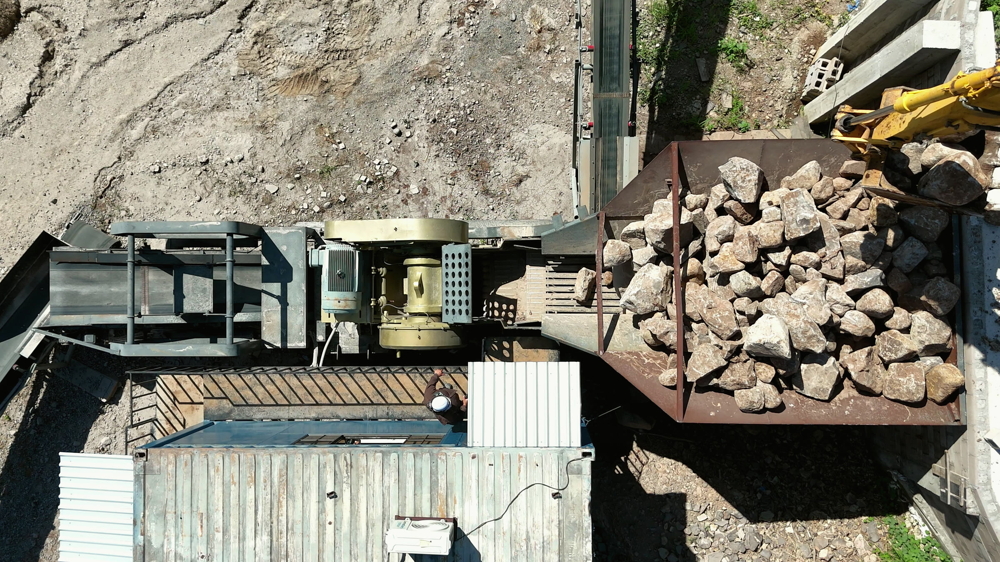
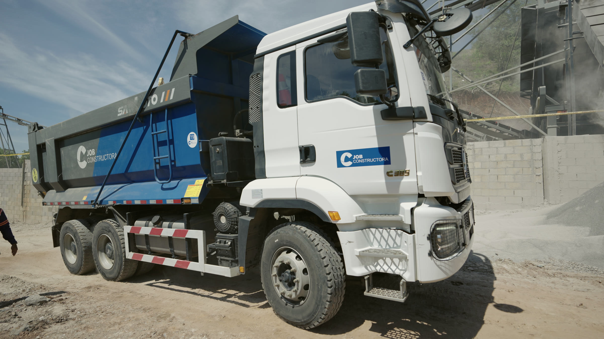
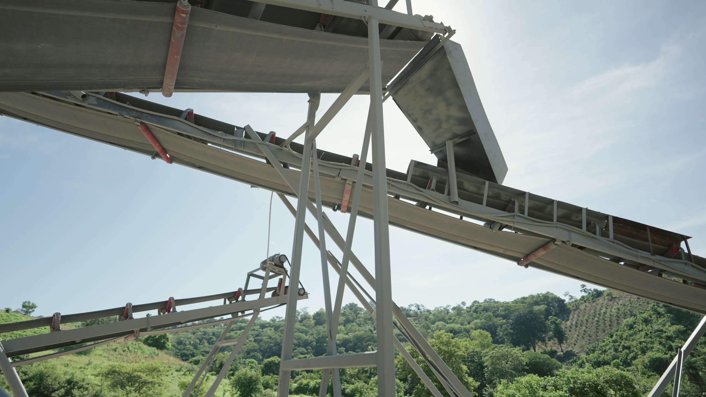
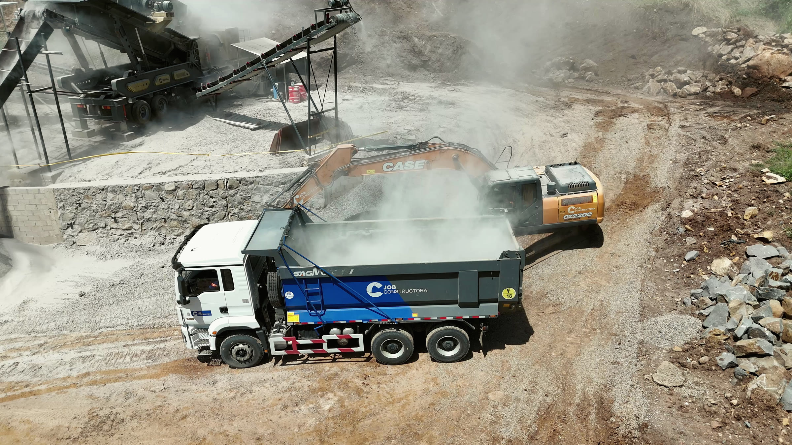
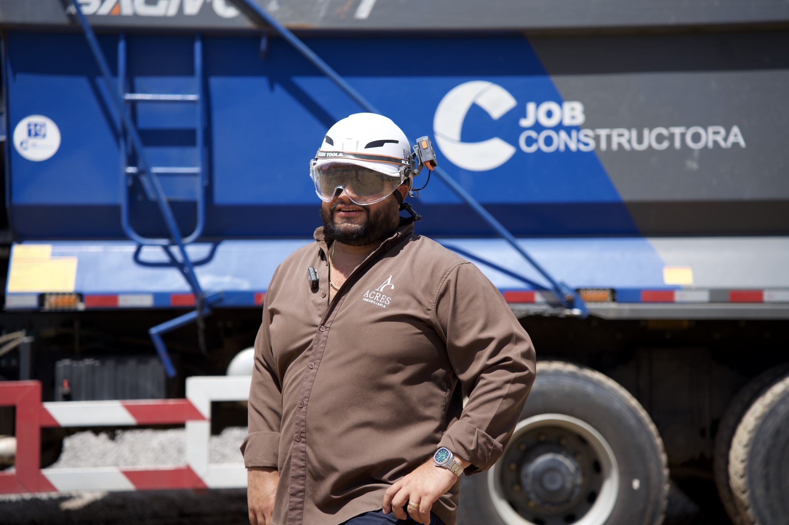
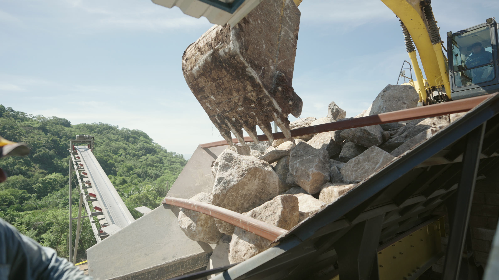
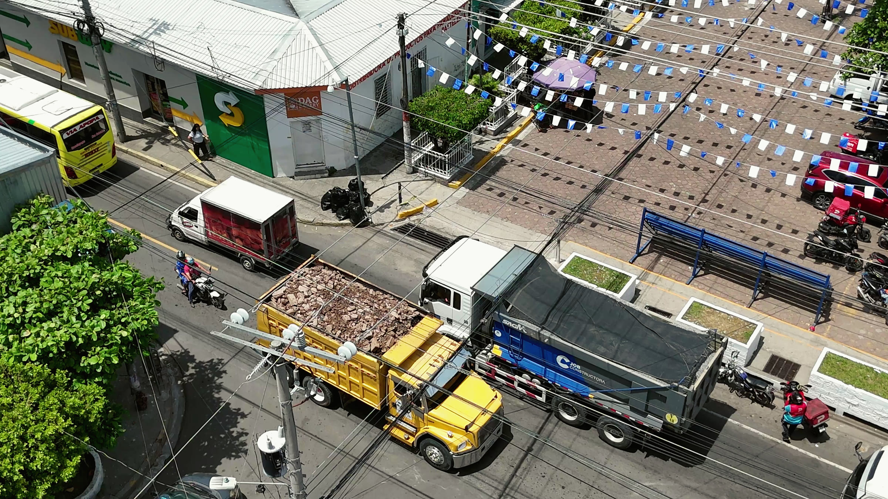
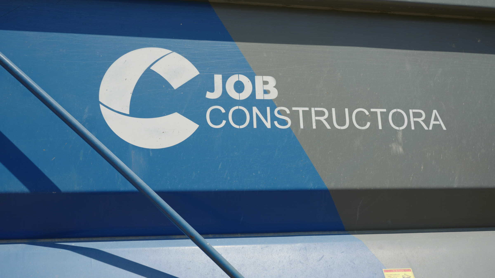
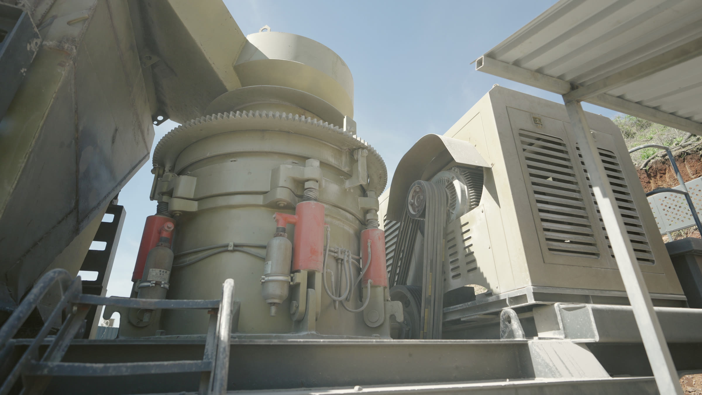
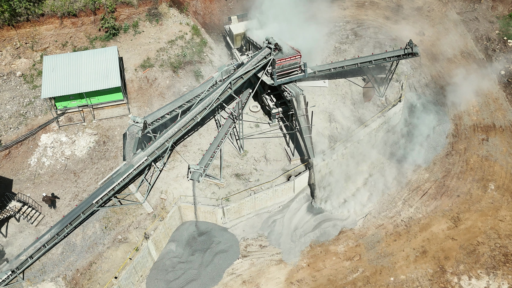
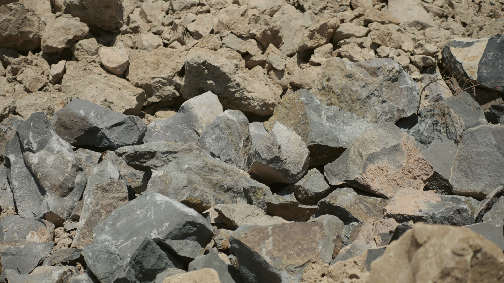
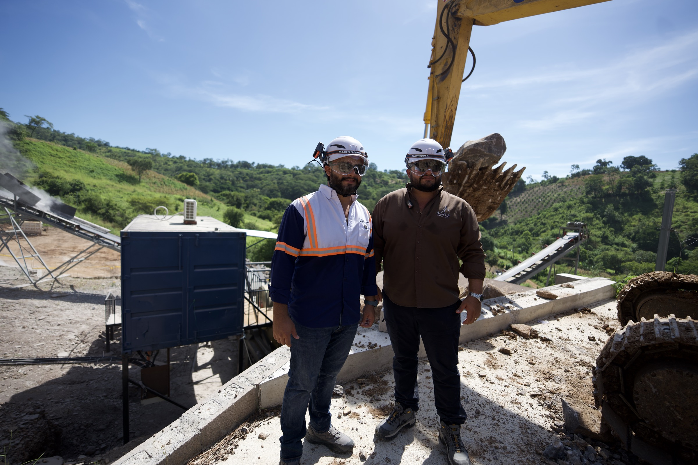
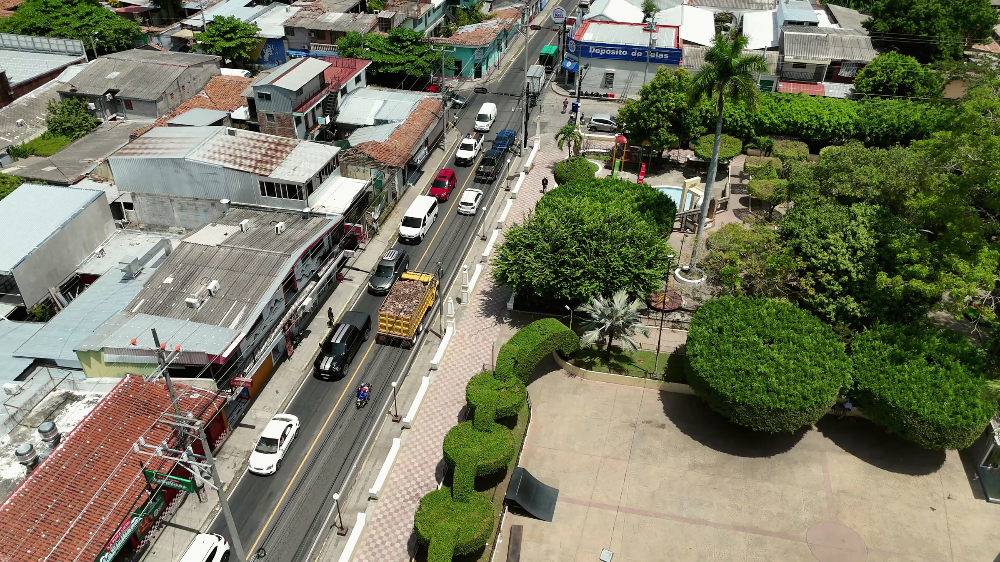
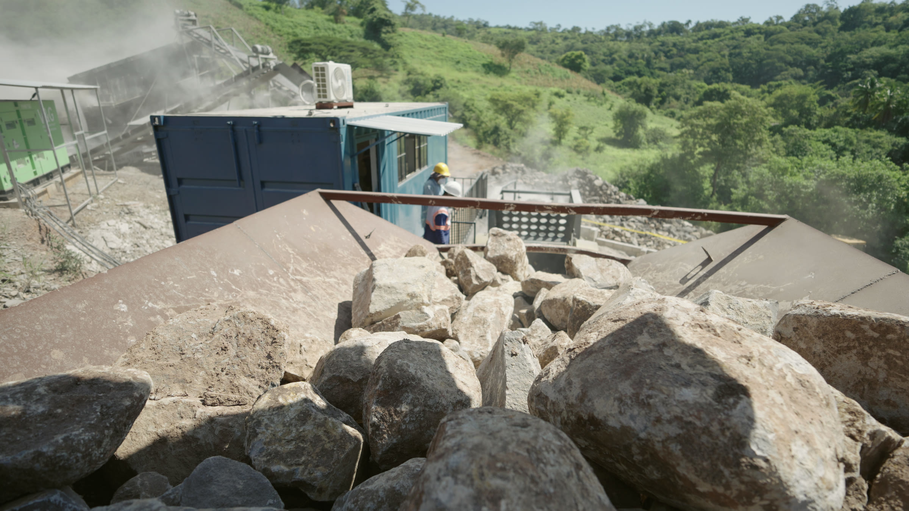
12 — Cotizar
Tocá tu departamento para ver a tu ejecutivo comercial, armá el pedido y obtené el total al instante. Precio claro, sin sorpresas.
Seleccioná un departamento en el mapa para ver a tu ejecutivo.